Code
try:
import fysisk_biokemi
print("Already installed")
except ImportError:
%pip install -q "fysisk_biokemi[pyodide] @ https://au-mbg.github.io/fysisk-biokemi/wheels/fysisk_biokemi-0.2.2-py3-none-any.whl"v1.0.1
try:
import fysisk_biokemi
print("Already installed")
except ImportError:
%pip install -q "fysisk_biokemi[pyodide] @ https://au-mbg.github.io/fysisk-biokemi/wheels/fysisk_biokemi-0.2.2-py3-none-any.whl"import numpy as np
import matplotlib.pyplot as plt
import pandas as pd
from scipy.optimize import curve_fit
from IPython.display import display
pd.set_option('display.max_rows', 6)Here, we will analyse the results from an experiment used to quantify affinity of a protein:lignd interaction. The data in binding_data_sq.xlsx is in the form of saturation (theta) as a function of the total ligand concentration L_tot. This is the type of data you typically get from e.g. a fluorescence titration experiment. Each measure-ment has been repeated three times.
Load the dataset with pandas. Set data_file_path to the path of the dataset file named above.
from fysisk_biokemi.datasets import load_dataset
df = load_dataset('binding_data_sq') # Load from package for the solution so it doesn't require to interact.
display(df)| L_(uM) | theta | |
|---|---|---|
| 0 | 0.0 | 0.000000 |
| 1 | 0.0 | 0.005258 |
| 2 | 0.0 | 0.000000 |
| ... | ... | ... |
| 72 | 500.0 | 0.875167 |
| 73 | 500.0 | 0.873289 |
| 74 | 500.0 | 0.854871 |
75 rows × 2 columns
Convert the ligand concentration to \(\mathrm{M}\) and add it to the dataframe as a new column named 'L_(m)'.
You can use display(df) to check if you have been successful.
df['L_(M)'] = df['L_(uM)'] * 10**(-6)
display(df)| L_(uM) | theta | L_(M) | |
|---|---|---|---|
| 0 | 0.0 | 0.000000 | 0.0000 |
| 1 | 0.0 | 0.005258 | 0.0000 |
| 2 | 0.0 | 0.000000 | 0.0000 |
| ... | ... | ... | ... |
| 72 | 500.0 | 0.875167 | 0.0005 |
| 73 | 500.0 | 0.873289 | 0.0005 |
| 74 | 500.0 | 0.854871 | 0.0005 |
75 rows × 3 columns
Make a scatter plot of the dataset and use the plot to estimate \(K_D\).
fig, ax = plt.subplots()
## Your task: Make a scatter plot (just points, no lines) of the data. ##
ax.plot(df['L_(M)'], df['theta'], 'o')
## EXTRA: ##
## This adds x and y-axis labels. ##
ax.set_xlabel('L (M)')
ax.set_ylabel(r'$\theta$')
plt.show()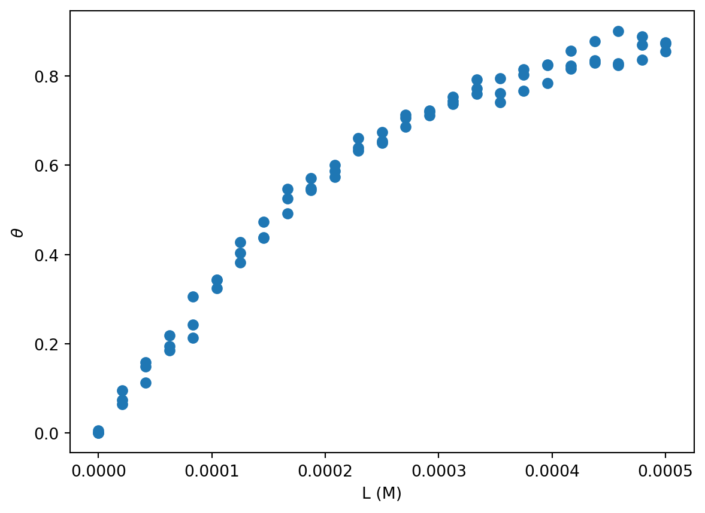
Put your estimate of \(K_D\) in the cell below
## Your task: Assign your estimate of K_D to the variable below ##
K_D_estimate = 0.0001Fit the data using the simple binding expression
\[ \theta = \frac{[L]}{[L] + K_D} \]
Start by defining a function, called simple_binding, that calculates this expression
## Your task: Define the function simple_binding that evaluates the equation ##
## from above. ##
def simple_binding(L, K_D):
theta = L / (L + K_D)
return thetaThen use that function to fit the data using curve_fit
## Your task: Set your estimate of K_D as the inital guess.
initial_guess = [K_D_estimate]
## Your task: Use curve_fit to find the fitted value of K_D
fitted_parameters, trash = curve_fit(simple_binding, df['L_(M)'], df['theta'], initial_guess)
## This extracts K_D and prints it ##
K_D_fit_simple = fitted_parameters[0]
print(K_D_fit_simple)0.00013628483915769865And evaluate the fit and plot it together with the dataset
## Your task: Evaluate simple_binding using L_smooth and the value of K_D from your fit ##
L_smooth = np.linspace(0, 0.0005, 100)
theta_fit_simple = simple_binding(L_smooth, K_D_fit_simple)
fig, ax = plt.subplots()
## Your task: Plot the fit as line plot and the data as a scatter plot. ##
ax.plot(df['L_(M)'], df['theta'], 'o')
ax.plot(L_smooth, theta_fit_simple)
## EXTRA:
## Labels for the axis.
ax.set_xlabel('L (M)')
ax.set_ylabel(r'$\theta$')
plt.show()
Is it a good fit?
To get a more quantitative view of the quality of the fit calculate residuals
theta_model = simple_binding(df['L_(M)'], K_D_fit_simple)
residuals_simple = df['theta'] - theta_modelAnd plot them versus the measured \(\mathrm{[L]}\)
fig, ax = plt.subplots()
## Your task: Make a plot with residuals on the y-axis and L on the x-axis ##
ax.plot(df['L_(M)'], residuals_simple, 'o')
## This makes a horizontal line through 0 ##
ax.axhline(0, color='black', linestyle='--')
## EXTRA
## Adds axis labels.
ax.set_xlabel('[L] (M)')
ax.set_ylabel('Residual')Text(0, 0.5, 'Residual')
Are the residuals randomly distributed around zero? What does this tell you about the quality of the fit?
The protein concentration in the above titrations was 250 uM. Formulate a hypothesis for why the fit fails.
The assumption made to derive the simple binding model is that the ligand concentration is much larger than the protein concentration such that the \([L_\mathrm{free}] \approx [L_\mathrm{total}]\) - or in other words that the number of ligand molecules bound to the proteins are not a significant proportion of the total number of ligand molecules. With \([P] = 250 \ \mu\textrm{M}\) and ligand concentrations in the range of 0 to 500 \(\mu\mathrm{M}\) this assumption is not valid.
Next, we will try a fitting model that explicitly considers the concentration of the protein being titrated. This is known as the quadratic binding equation
\[ \begin{aligned} \theta &= \frac{K_D + [P_{tot}] + [L_{tot}]}{2[P_{tot}]} - \sqrt{\left(\frac{K_D + [P_{tot}] + [L_{tot}]}{2[P_{tot}]}\right)^2 - \frac{[L_{tot}]}{[P_{tot}]}} \\ \end{aligned} \]
The value of \([P_{tot}]\) is \(250 \ \mu\mathrm{M}\).
Start by implementing the expression as a Python function - remember that you need to be careful with parentheses with a function like this.
def quadratic_binding(L, K_D):
## Your task: Set the protein concentration in appropriate units. ##
P_tot = 250 * 10**(-6)
## Your task: Implement the quadratic binding equation ##
## Be careful with parentheses! ##
theta = (K_D + P_tot + L) / (2 * P_tot) - np.sqrt(((K_D + P_tot + L) / (2 * P_tot))**2 - L / P_tot)
return theta
print(f"{quadratic_binding(100, 138.09) = :.3f}") # Should give 0.420quadratic_binding(100, 138.09) = 0.420And now make a fit using this expression
## Your task: Make a fit using the quadratic binding equation. ##
fitted_parameters, trash = curve_fit(quadratic_binding, df['L_(M)'], df['theta'])
## Extratcs and prints K_D ##
K_D_fit_quad = fitted_parameters[0]
print(K_D_fit_quad)4.214239381928562e-05The cell below makes a figure of the data and the residuals for each fit. You are not expected to understand every line of code – the figure is mainly to aid you interpretation of the data and show case how you can make beautiful figures from you own data later on.
theta_fit_quad = quadratic_binding(L_smooth, K_D_fit_quad)
residuals_quad = df['theta'] - quadratic_binding(df['L_(M)'], K_D_fit_quad)
fig, axes = plt.subplots(1, 2, figsize=(9, 4))
# Data & Fit
ax = axes[0]
ax.plot(df['L_(M)'], df['theta'], 'o', label='Data')
ax.plot(L_smooth, theta_fit_simple, label='Simple binding', linewidth=3)
ax.plot(L_smooth, theta_fit_quad, label='Quadratic binding', linewidth=3)
ax.set_xlabel('L (M)')
ax.set_ylabel(r'$\theta$')
ax.set_title('Data & Fits')
ax.legend()
# Residuals
ax = axes[1]
ax.plot(df['L_(M)'], residuals_simple, 'o', color='C1', label='Simple binding')
ax.plot(df['L_(M)'], residuals_quad, 'o', color='C2', label='Quadratic binding')
ax.axhline(0, color='black', linestyle='--')
ax.set_title('Residuals')
ax.set_xlabel('L (M)')
ax.legend()
plt.show()
Consider the following questions:
import matplotlib.pyplot as plt
import numpy as np
import pandas as pd
from scipy.optimize import curve_fit
from IPython.display import display
pd.set_option('display.max_rows', 6)You have carried out a kinetic experiment investigating the turnover of two metabolites, A1 and A2, in a cell lysate. For each metabolite, you have measured the concentration of the compound as a function of time using UV-Vis spectroscopy aiming to determine the reaction order, and thus deduce something about the reaction mechanism by which they are processed. The date from this experiment is found in reaction-orders.xlsx.
Load the dataset reaction-orders.xlsx with pandas. Set data_file_path to the path of the dataset file.
from fysisk_biokemi.datasets import load_dataset
df = load_dataset('reaction_order_week48') # Load from package for the solution so it doesn't require to interact.
display(df)| Time_s | A1_uM | A2_uM | |
|---|---|---|---|
| 0 | 0.0 | 2.000000 | 4.500000 |
| 1 | 1.0 | 1.833259 | 4.212598 |
| 2 | 2.0 | 1.823775 | 3.939486 |
| ... | ... | ... | ... |
| 48 | 48.0 | 0.136936 | 0.854009 |
| 49 | 49.0 | 0.132587 | 0.885128 |
| 50 | 50.0 | 0.212870 | 0.752202 |
51 rows × 3 columns
Add two new columns with the concentrations given in M.
df['A1_M'] = df['A1_uM'] * 10**(-6)
df['A2_M'] = df['A2_uM'] * 10**(-6)
display(df)| Time_s | A1_uM | A2_uM | A1_M | A2_M | |
|---|---|---|---|---|---|
| 0 | 0.0 | 2.000000 | 4.500000 | 2.000000e-06 | 4.500000e-06 |
| 1 | 1.0 | 1.833259 | 4.212598 | 1.833259e-06 | 4.212598e-06 |
| 2 | 2.0 | 1.823775 | 3.939486 | 1.823775e-06 | 3.939486e-06 |
| ... | ... | ... | ... | ... | ... |
| 48 | 48.0 | 0.136936 | 0.854009 | 1.369359e-07 | 8.540093e-07 |
| 49 | 49.0 | 0.132587 | 0.885128 | 1.325872e-07 | 8.851275e-07 |
| 50 | 50.0 | 0.212870 | 0.752202 | 2.128700e-07 | 7.522017e-07 |
51 rows × 5 columns
For each reactant make a plot of the concentration versus time.
fig, ax = plt.subplots()
## Your task: Make plots of concentration (y) versus time (x). ##
## Hint: ax.plot(x_data, y_data, 'o') to make a scatter plot. ##
ax.plot(df['Time_s'], df['A1_M'], 'o')
ax.plot(df['Time_s'], df['A2_M'], 'o')
## EXTRA: Customization of axis labels ##
ax.set_xlabel('Time [s]')
ax.set_ylabel('Concentration')Text(0, 0.5, 'Concentration')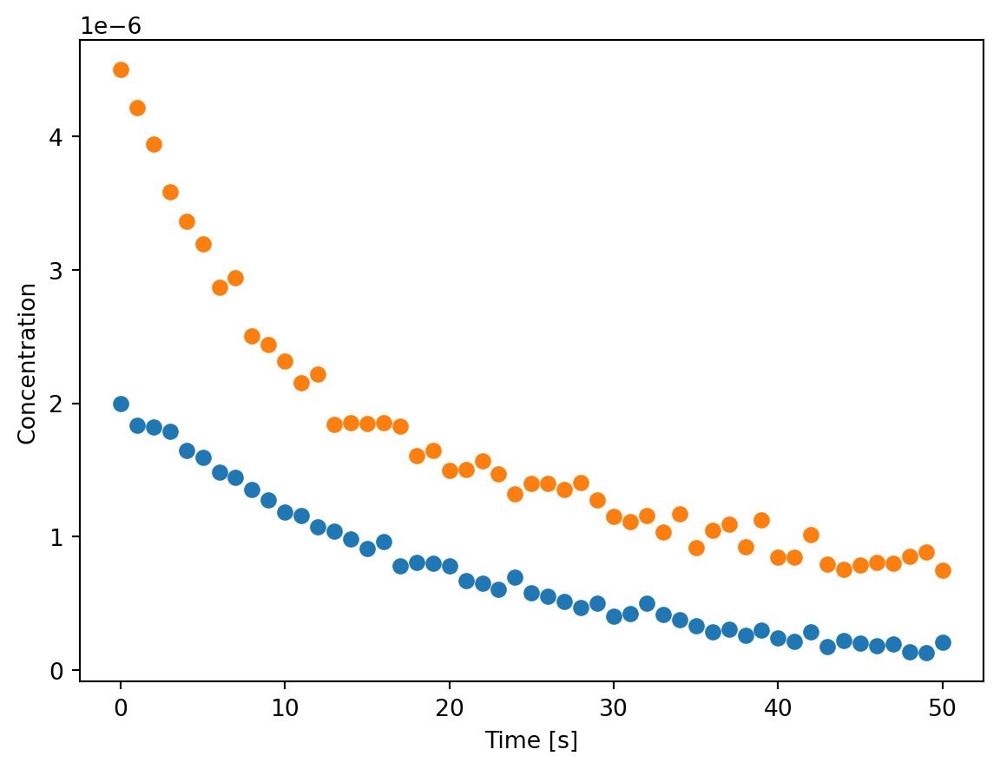
We will model the reactions as zeroth, first and second order. We will consider both the the rate constant \(k\) and the concentration at time \(t = 0\) parameters of the fit.
def zeroth_order(t, k, A0):
## Your task: Implement the zeroth order rate equation ##
result = A0 - k*t
return result
def first_order(t, k, A0):
## Your task: Implement the first order rate equation ##
result = A0 * np.exp(-k*t)
return result
def second_order(t, k, A0):
## Your task: Implement the second order rate equation ##
result = A0 / (1 + 2*k*t*A0)
return result
## Use these to check that your functions are correct!
print('zeroth_order', zeroth_order(1, 1, 2)) # Should give 1
print('first_order', first_order(1, 1, 2)) # Should give 0.7357...
print('second_order', second_order(1, 1, 2)) # Should give 0.4zeroth_order 1
first_order 0.7357588823428847
second_order 0.4Then we can make a fit to measurements of each reactant.
## Your task: Pick a rate equation and assign it to the variable rate_equation
## You can change this to first_order or second_order
## Do not call the function - so no (...) just assign it to the variable.
rate_equation = zeroth_order
## Your task: Make a fit of the A1_M data with 'rate_equation'.
fitted_parameters_A1, trash = curve_fit(rate_equation, df['Time_s'], df['A1_M'])
k_A1_fit = fitted_parameters_A1[0]
A1_0_fit = fitted_parameters_A1[1]
## Your task: Make a fit of the A2_M with 'rate_equation'.
fitted_parameters_A2, trash = curve_fit(rate_equation, df['Time_s'], df['A2_M'])
k_A2_fit = fitted_parameters_A2[0]
A2_0_fit = fitted_parameters_A2[1]
## Prints the found parameters
print(k_A1_fit)
print(A1_0_fit)
print(k_A2_fit)
print(A2_0_fit)3.390184293164445e-08
1.5887604659704164e-06
5.786947687397643e-08
3.148604267116672e-06Now that we fitted the data using one of the rate equations, we can plot to see how well it fits
fig, ax = plt.subplots()
## Your task: Finish the code to calculate the fit for A2.
t_smooth = np.linspace(0, 55)
A1_fit = rate_equation(t_smooth, k_A1_fit, A1_0_fit)
A2_fit = rate_equation(t_smooth, k_A2_fit, A2_0_fit)
## Your task: Plot the fits
ax.plot(t_smooth, A1_fit)
ax.plot(t_smooth, A2_fit)
## Plots the data ##
ax.plot(df['Time_s'], df['A1_M'], 'o')
ax.plot(df['Time_s'], df['A2_M'], 'o')
## EXTRA: Customization of axis labels ##
ax.set_xlabel('Time [s]')
ax.set_ylabel('Concentration')Text(0, 0.5, 'Concentration')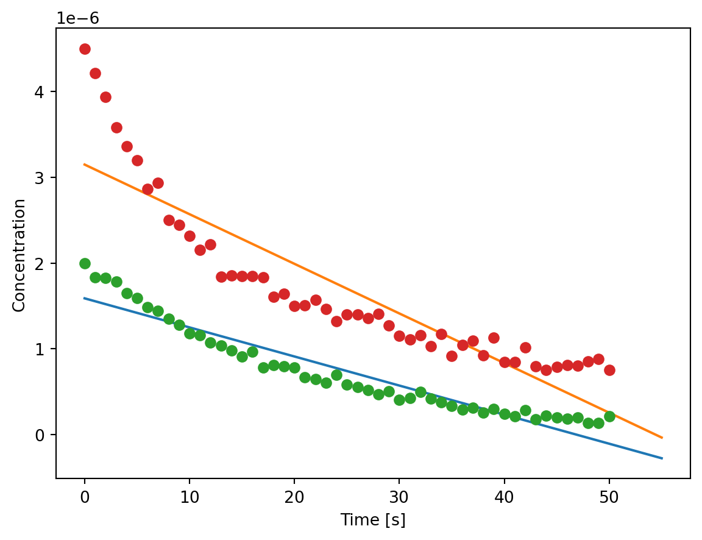
Once you’ve finished the fitting with one of the rate equations you can go back and change the rate_equation variable to try one of the others.
The cell below makes a plot for each rate law in the same panel using your defined rate equations.
from fysisk_biokemi.utils.deter_reacti_orders import make_plot
rate_laws = {0: zeroth_order, 1: first_order, 2: second_order}
make_plot(df, rate_laws)
Based on this plot;
The first order rate equation is
\[ A_0 \cdot \exp({-k\cdot t}) \]
The term in the exponential has to be unitless, so we need \(k\) to have the inverse units of \(t\)
\[ k \rightarrow \frac{1}{t} \rightarrow \frac{1}{\text{s}} \]
The integrated second order rate is
\[ \frac{A_0}{1 + 2\cdot k \cdot t \cdot A_0} \]
Looking at the denominator it includes the term \[ 1 + 2\cdot k \cdot t \cdot A_0 \] For this addition to make sense the second term needs to be unitless, so we have can conclude that the unit of \(k\) must cancel those of \(t \cdot A_0\), so
\[ k \rightarrow \frac{1}{t \cdot A_0} \rightarrow \frac{1}{\text{s} \cdot \text{M}} \]
What does the above tell you about the reaction mechanism whereby the two compounds disappear from the lysate?
import matplotlib.pyplot as plt
import numpy as npConsider the following reaction
\[ A \underset{k_{2}}{\stackrel{k_1}{\rightleftharpoons}} B \]
The magnitudes of the rate constants are \(k_1 = 10 \ \mathrm{s}^{-1}\) and \(k_2 = 1 \ \mathrm{s}^{-1}\).
What is the reaction order in each direction?
Two perspectives
From the chemical equation: Each elementary step involves only one reactant molecule:
Since each step involves a single reactant, both are first-order reactions.
From the units: The rate constants have units of \(\mathrm{s}^{-1}\), which is the unit of first order reactions.
Show mathematically how the equilibrium constant \(K_{\mathrm{eq}}\) is given by the ratio between the two rate constants.
At equilibrium, the forward and reverse reaction rates are equal:
\[r_{\text{forward}} = r_{\text{reverse}}\]
For the reaction \(A \rightleftharpoons B\), both are first order as discussed above:
Setting them equal: \[k_1[A]_{\text{eq}} = k_2[B]_{\text{eq}}\]
Rearranging to solve for the ratio of concentrations: \[\frac{[B]_{\text{eq}}}{[A]_{\text{eq}}} = \frac{k_1}{k_2}\]
By definition, the equilibrium constant is: \[K_{\text{eq}} = \frac{[B]_{\text{eq}}}{[A]_{\text{eq}}}\]
Therefore: \[K_{\text{eq}} = \frac{k_1}{k_2}\]
## Your task: Assign known values & calculate the equilibrium constant.
k1 = 10
k2 = 1
K_eq = k1 / k2
print(K_eq)10.0Calculate the concentrations of A and B at equilibrium, \([\mathrm{A}]_{\mathrm{eq}}\) and \([\mathrm{B}]_\mathrm{eq}\), if \([\mathrm{A}]_0 = 10^{-3} \text{M}\)
A0 = 10**(-3)
A_eq = (k2 * A0) / (k1 + k2)
B_eq = (k1 * A0) / (k1 + k2)
print(A_eq)
print(B_eq)9.090909090909092e-05
0.0009090909090909091If \([\mathrm{A}]_0 = 10^{-3} \ \text{M}\) and \([\mathrm{B}]_0 = 0 \ \text{M}\), calculate the initial rate of formation of B.
## Your task: Calculate initial rate of formation of B
r_fwd = A0 * k1
print(r_fwd)0.01
We now want to calculate and plot the time-dependent concentrations using the above equations.
In the cell below finish the implementation of the function A_time that calculates the concentration [A] as a function of time.
## Your task: Implement the function to calculate the time dependent concentration.
## Be careful with parentheses.
def A_time(t, A0, k_f, k_b):
A_t = (k_b + k_f * np.exp(-(k_f+k_b)*t)) / (k_f + k_b) * A0
return A_t
test = A_time(1, 1, 1, 1)
print(test) # This should give 0.567...0.5676676416183064And then we can use that function to calculate and plot the concentrations as a function of time. As you have seen above, the reaction is pretty fast, so we will just focus on the first second
fig, ax = plt.subplots()
t = np.linspace(0, 1, 100)
## Your task: Calculate [A](t) and [B](t) ##
At = A_time(t, A0, k1, k2)
Bt = A0 - At
## Plots the concentrations versus time.
ax.plot(t, At, label='[A](t)')
ax.plot(t, Bt, label='[B](t)')
## EXTRA: Sets x and y-axis labels.
ax.set_ylabel('Concentrations (M)', fontsize=14)
ax.set_xlabel('Time (s)', fontsize=14)
ax.legend()
import numpy as np
import matplotlib.pyplot as plt
import pandas as pd
from IPython.display import display
from scipy.optimize import curve_fit
pd.set_option('display.max_rows', 6)The irreversible isomerization of compound A to compound B results in a decreasing absorbance. The isomerization was followed in a time course at two different temperatures (T1 = 25 °C and T2 = 40 °C). The absorbance (\(\epsilon\) = 16700 \(\mathrm{cm}^{-1} \mathrm{M}^{-1}\)) was used to calculate the concentration of compound A in a spectrophotometer with a pathlength of 1 cm. The obtained dataset is given in the file deter-reacti-order-activ.csv.
What are the two temperatures in Kelvin? Set them as varilabes in the cell below.
## Your task: Convert the temperatures to K and assign to the variables:
T1 = 25 + 273.15
T2 = 40 + 273.15Load the dataset with pandas. Set data_file_path to the path of the dataset file named above.
data_file_path = ... # Write the path to the dataset file
df = pd.read_csv(data_file_path)
display(df)from fysisk_biokemi.datasets import load_dataset
df = load_dataset('reaction_order_activation_week48') # Load from package for the solution so it doesn't require to interact.
display(df)| t_(s) | Abs(t)_25C | Abs(t)_40C | |
|---|---|---|---|
| 0 | 0.000 | 0.835 | 0.835 |
| 1 | 0.002 | 0.801 | 0.806 |
| 2 | 0.004 | 0.787 | 0.731 |
| ... | ... | ... | ... |
| 23 | 0.046 | 0.327 | 0.207 |
| 24 | 0.048 | 0.321 | 0.201 |
| 25 | 0.050 | 0.306 | 0.185 |
26 rows × 3 columns
Calculate the concentration of A at each timepoint in SI units, by adding new columns to the DataFrame.
## Your task: Assign known values ##
extinction_coeff = 16700
L = 1 # Path length
## Calculate concentrations using the variables above and the data in the dataframe ##
df['[A]_(M)_25C'] = df['Abs(t)_25C'] / (extinction_coeff * L)
df['[A]_(M)_40C'] = df['Abs(t)_40C'] / (extinction_coeff * L)
display(df)| t_(s) | Abs(t)_25C | Abs(t)_40C | [A]_(M)_25C | [A]_(M)_40C | |
|---|---|---|---|---|---|
| 0 | 0.000 | 0.835 | 0.835 | 0.000050 | 0.000050 |
| 1 | 0.002 | 0.801 | 0.806 | 0.000048 | 0.000048 |
| 2 | 0.004 | 0.787 | 0.731 | 0.000047 | 0.000044 |
| ... | ... | ... | ... | ... | ... |
| 23 | 0.046 | 0.327 | 0.207 | 0.000020 | 0.000012 |
| 24 | 0.048 | 0.321 | 0.201 | 0.000019 | 0.000012 |
| 25 | 0.050 | 0.306 | 0.185 | 0.000018 | 0.000011 |
26 rows × 5 columns
We will be resuing the plot, so we will put the code for it in a function.
fig, ax = plt.subplots()
# Task: Plot the two data series in a scatter plot
# That is: t_(s) vs [A]_(M)_25C
# and: t_(s) vs [A]_(M)_40C
ax.plot(df['t_(s)'], df['[A]_(M)_25C'], 'o', label='[A]_25C')
ax.plot(df['t_(s)'], df['[A]_(M)_40C'], 'o', label='[A]_40C')
## EXTRA: This sets x and y-axis labels and shows the legends.
ax.set_xlabel('t (s)')
ax.set_ylabel('[A] (M)')
ax.legend()
Now want to fit the data using integrated rate laws - in order to ultimately determine the reaction orders of the two datasets.
To do so we need functions for zeroth, first and second order integrated rate laws.
def zeroth_order(t, k, A0):
## Your task: Implement the zeroth order rate equation ##
result = A0 - k*t
return result
def first_order(t, k, A0):
## Your task: Implement the first order rate equation ##
result = A0 * np.exp(-k*t)
return result
def second_order(t, k, A0):
## Your task: Implement the second order rate equation ##
result = A0 / (1 + 2*k*t*A0)
return result
## Use these to check that your functions are correct!
print('zeroth_order', zeroth_order(1, 1, 2)) # Should give 1
print('first_order', first_order(1, 1, 2)) # Should give 0.7357...
print('second_order', second_order(1, 1, 2)) # Should give 0.4zeroth_order 1
first_order 0.7357588823428847
second_order 0.4Having defined these functions we can use them for fitting
## Task: Choose one of the rate equations and assign to the variable
rate_equation = first_order
## Task: Fit to the data at 25 C
fitted_parameters_25C, trash = curve_fit(rate_equation, df['t_(s)'], df['[A]_(M)_25C'])
## Task: Fit to the data at 40 C
fitted_parameters_40C, trash = curve_fit(rate_equation, df['t_(s)'], df['[A]_(M)_40C'])
## Extracts & prints the parameters
k_25C, A0_25C = fitted_parameters_25C
k_40C, A0_40C = fitted_parameters_40C
print(k_25C, A0_25C)
print(k_40C, A0_40C)20.081750693534495 5.024371022380773e-05
29.96091632105259 4.990085394734088e-05Having made the fits we plot it together with the two data series.
## Your task: Calculate the fits using the chosen rate equation &
## the found parameters found during fitting.
t_smooth = np.linspace(0, 0.05, 100)
A_fit_25C = rate_equation(t_smooth, k_25C, A0_25C)
A_fit_40C = rate_equation(t_smooth, k_40C, A0_40C)
fig, ax = plt.subplots()
## Your task: Plot the two fits
ax.plot(t_smooth, A_fit_25C)
ax.plot(t_smooth, A_fit_40C)
## This plots the data sets
ax.plot(df['t_(s)'], df['[A]_(M)_25C'], 'o', label='[A]_25C', color='C0')
ax.plot(df['t_(s)'], df['[A]_(M)_40C'], 'o', label='[A]_40C', color='C1')
## EXTRA: Sets the axis labels and legend.
ax.set_xlabel('t (s)')
ax.set_ylabel('[A] (M)')
ax.legend()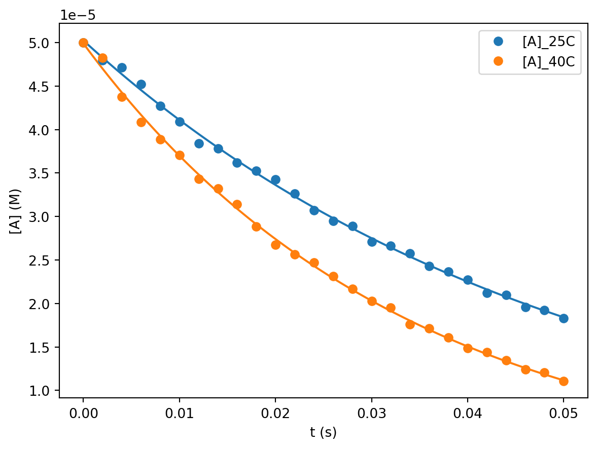
You can go back to the cell where you set rate_equation and use another of the three: zeroth_order, first_order, second_order.
Based on your analysis above or by using the plot the created by the next cell determine the reaction order and the units of the rate constant for each of the two reactions.
The function makes the same fits that you made, but makes them all at once and plots the results side by side.
from fysisk_biokemi.utils.deter_reacti_order_activ import make_plot
rate_laws = {0: zeroth_order, 1: first_order, 2: second_order}
make_plot(df, rate_laws)
The function ‘make_plot’ is beyond what is expected for this course, however if you are interested you can see the source code for it on github.
Both are first order reactions for which the units of the rate constant is \(\frac{1}{\mathrm{s}}\).
With the assumption that the Arrhenius constant \(A\) and the activation energy are temperature independent in the interval measured, use the Arrhenius equation to calculate the activation energy of the isomerization of the compound A.
You can use \(R = 8.314 \times 10^{-3} \ \frac{\text{kJ}}{\text{mol} \cdot \text{K}}\)
You need to derive the correct equation before using Python to calculate the result.
Perform the calculation in the cell below.
## Your task: Define known & fitted values
k1 = 20.08175
k2 = 29.96091
R = 8.318 * 10**(-3) # kJ / (mol K)
## Your task: Calculate the activation energy
## Remember: Derive the correct formula first using pen and paper!
activation_energy = R * np.log(k1/k2)/(1/T2 - 1/T1) # kJ/mol
print(activation_energy)20.71400117402973The Arrhenius equation is
\[ k = A \cdot \exp\left(\frac{-E_A}{RT}\right) \] We have this for the two situations \[ \begin{aligned} k_1 &= A \cdot \exp\left(\frac{-E_A}{RT_1}\right) \\ k_2 &= A \cdot \exp\left(\frac{-E_A}{RT_2}\right) \end{aligned} \] Giving us two equations with two unknowns \(A\) and \(E_A\) where \(E_A\) is the activation energy that we are interested in.
Taking the log on both sides we get \[ \ln(k) = \ln(A) - \frac{E_A}{RT} \] Where we can isolate for \(\ln(A)\) \[ \ln(A) = \ln(k) + \frac{E_A}{RT} \] We can equate this for both our equations \[ \ln(k_1) + \frac{E_A}{RT_1} = \ln(k_2) + \frac{E_A}{RT_2} \] Rearranging a bit we get \[ \ln(k_1) - \ln(k_2) = \frac{E_A}{R} \left( \frac{1}{T_2} - \frac{1}{T_1} \right) \] Isolating for \(E_A\)
\[ \begin{aligned} E_A &= R\frac{\ln(k_1)-\ln(k_2)}{\left( \frac{1}{T_2} - \frac{1}{T_1} \right)} \\ & = \frac{R\ln\left(\frac{k_1}{k_2}\right)}{{\left( \frac{1}{T_2} - \frac{1}{T_1} \right)}} \end{aligned} \]
Assume that a compound R can react with the unprotonated form of Histidine, \(\text{His}\), to form a covalent reaction product, \(\text{P}\): \[ \text{His} + \text{R} \rightarrow \text{P} \]
The protonated form of Histidine, \(\text{HisH}^+\), is in equilibrium with \(\text{His}\):
\[ \text{HisH}^+ \rightleftharpoons \text{His} + \text{H}^+ \]
The pKa value for this acid-base equilibrium is 6.0. Further assume that the total concentration of Histidine, is
\[ [\text{HisH}^+] + [\text{His}] = 10^{-3} \ \text{M} \]
What percentage of Histidine is unprotonated at pH 6.0. What do you notice about the relationship between pH and pKa in this case? (You should not need to do any arithemtic or algebra to answer this exercise.)
## Your task: What percentage is unprotonated?
percentage_unprotonated = 50Because \(\text{pH} = \text{pKa}\) the percentage of unprotonated is 50%, so there is no need to do a direct calculation in this case.
Determine \([\text{His}]\) at pH 6
## Your task: Assign known value and calculate [His]
total_conc = 10**(-3)
his_conc = total_conc * percentage_unprotonated / 100 # Unit: M
print(his_conc)
# Or directly
his_conc = 0.5 * 10**(-3) # Unit: M
print(his_conc)0.0005
0.0005The reaction equation for the reaction between \(\text{His}\) and \(\text{R}\) is
\[ v = - \frac{d[\text{His}]}{dt} = k \cdot [\text{His}] \cdot [\text{R}] \]
What’s the reaction order?
Bimolecular so we expect second order reaction.
If \([\text{R}]\) is much higher than \([\text{His}]\), what can then be concluded regarding the order of the reaction?
\([R]\) will remain roughly constant - we are thus in the regime of a pseudo first order reaction
Show how a new rate constant, \(k'\), can be defined in these conditions. How does \(k'\) depend on \(\text{R}\)?
\(v = k \cdot [\text{His}] \cdot [\text{R}]\)
\(k^{\prime} = k[\text{R}]\)
\(v = k^{\prime}[\text{His}]\)
Then \(k^{\prime}\) is linearly proportional with \([\text{R}]\).
At pH 6.0 the reaction rate \(v = 1 \ \text{mM}\cdot \text{s}^{-1}\).
Convert the reaction rate to SI-units given in \(\text{M}\cdot \text{s}^{-1}\).
# Your task: Calculate v in SI units M / s
reaction_rate = 1 * 10**(-3) # Units: M / s
print(reaction_rate)0.001Use the concentration of \([\text{His}]\) at pH 6 calculated in question (b), the reaction rate from (f) and constant \([\text{R}] = 0.2 \ \text{M}\) to calculate the rate constant \(k\).
## Your task: Set known value and calculate k ##
## Hint: You can use the his_conc variable ##
R_conc = 0.2
k = reaction_rate / (R_conc * his_conc)
print(k)10.0import plotly
import fysisk_biokemi.widgets as fbw
from fysisk_biokemi.widgets.utils import enable_custom_widget_colab, disable_custom_widget_colab
from IPython.display import display, HTML
enable_custom_widget_colab()fbw.michaelis_menten_demo()Use the widget created by the cell above to answer the following the questions.
Setting \(V_\mathrm{max} = 400\) and \([E]_\mathrm{tot} = 0.0005\), change \(K_M\) from 0.5 to 5 to 10 to 50. Describe the change in curve appearance and explain it using the Michaelis-Menten (MM) equation.
What is the biochemical meaning of \(K_M\)?
Now set \([E]_\mathrm{tot} = 0.0005\), and \(K_M = 5\). Change \(V_\mathrm{max}\) step-wise from 40 to 900. Describe the changes you observe and how they relate to the MM equation.
After this, repeat the procedure for \([E]_\mathrm{tot}\) increasing it 10-fold.
Next, we will explore the regime where \([S] \ll K_M\). Initially, set \(K_M = 10\) and zoom in on the regime from \(0\) to \(1\) on the X-axis. What does the MM equation look like in this regime? Use the MM equation and a simplifying assumption to show how this occurs.
Next, increase \(K_M\) five-fold and try to change \(V_\mathrm{max}\) som the curve appearance is unchanged (beware of the autoscaling Y-axis).
Imagine an experiment conducted using only \([S]\) values from this range. How would this affect how well you could determine the MM parameters?
Train your estimation skills using the widget below.
fbw.michealis_menten_guess()import matplotlib.pyplot as plt
from scipy.optimize import curve_fit
import numpy as np
import pandas as pd
from IPython.display import display
pd.set_option('display.max_rows', 6)We have finally arrived at the part of the course where we are ready to analyse the data from your lab exercise in the first quarter. First, however we will analyse a similar data set where we are sure about the data quality (😉) to illustrate the process.
In the Excel document design-enzyme-kineti-exper.xlsx you will find a data set in which an enzyme catalyzed formation of product P, with varying start concentration of substrates, [S], was followed over time. The product absorbs light at a specific wavelength with an extinction coefficient of 0.068 \(\mu\text{M}^{-1}\cdot \text{cm}^{-1}\), and the absorbance was measured in a light path of 1 cm throughout the time course.
Load the dataset with pandas. Set data_file_path to the path of the dataset file named above.
data_file_path = ... # Write the path to the dataset file
df = pd.read_excel(data_file_path)
display(df)from IPython.display import display
from fysisk_biokemi.datasets import load_dataset
df = load_dataset('design-enzyme-kineti-exper.xlsx') # Load from package for the solution so it doesn't require to interact.
display(df)| time_(s) | Abs_S1 | Abs_S2 | Abs_S4 | Abs_S8 | Abs_S16 | Abs_S32 | Abs_S64 | Abs_S128 | Abs_S256 | |
|---|---|---|---|---|---|---|---|---|---|---|
| 0 | 0.0 | 0.000 | 0.000 | 0.000 | 0.000 | 0.000 | 0.000 | 0.000 | 0.000 | 0.000 |
| 1 | 1.0 | 0.002 | 0.004 | 0.008 | 0.015 | 0.025 | 0.038 | 0.051 | 0.063 | 0.068 |
| 2 | 2.0 | 0.004 | 0.008 | 0.015 | 0.028 | 0.048 | 0.073 | 0.099 | 0.121 | 0.131 |
| ... | ... | ... | ... | ... | ... | ... | ... | ... | ... | ... |
| 18 | 18.0 | 0.022 | 0.042 | 0.080 | 0.145 | 0.246 | 0.376 | 0.511 | 0.623 | 0.677 |
| 19 | 19.0 | 0.022 | 0.043 | 0.082 | 0.149 | 0.252 | 0.385 | 0.524 | 0.639 | 0.693 |
| 20 | 20.0 | 0.023 | 0.044 | 0.084 | 0.152 | 0.257 | 0.394 | 0.535 | 0.653 | 0.709 |
21 rows × 10 columns
The headers, like Abs_S1 refer to the substrate concentration so S1 means a substrate concentration of 1 \(\mu\text{M}\).
Convert the extinction coefficient to units given in \(\text{M}^{-1}\cdot \text{cm}^{-1}\) and assign it to a variable. Also assign the light path length to a variable.
## Your task: Assign known values in SI units.
ext_coeff = 0.068 / 10**(-6) # 1/(M cm)
l = 1 # cmUsing Lambert-Beers law, calculate the concentration of product, \([P]\), in \(\text{M}\) for each time series.
The cell below setups a loop calculate the concentrations for each of these current columns in the dataframe.
## Your task calculate the concentration for each 'Abs_SX' column and add it ##
## as a new column.
df['C_S1'] = df['Abs_S1'] / (ext_coeff * l)
df['C_S2'] = df['Abs_S2'] / (ext_coeff * l)
df['C_S4'] = df['Abs_S4'] / (ext_coeff * l)
df['C_S8'] = df['Abs_S8'] / (ext_coeff * l)
df['C_S16'] = df['Abs_S16'] / (ext_coeff * l)
df['C_S32'] = df['Abs_S32'] / (ext_coeff * l)
df['C_S64'] = df['Abs_S64'] / (ext_coeff * l)
df['C_S128'] = df['Abs_S128'] / (ext_coeff * l)
df['C_S256'] = df['Abs_S256'] / (ext_coeff * l)A more advanced alternative solution is to use a for-loop like done below, however this is outside the scope of what you’re going to learn in this course.
for s in [1, 2, 4, 8, 16, 32, 64, 128, 256]:
df[f'C_{s}'] = df[f'Abs_S{s}'] / (ext_coeff * l)And we can check that the columns we expect have been added to the DataFrame.
display(df)| time_(s) | Abs_S1 | Abs_S2 | Abs_S4 | Abs_S8 | Abs_S16 | Abs_S32 | Abs_S64 | Abs_S128 | Abs_S256 | C_S1 | C_S2 | C_S4 | C_S8 | C_S16 | C_S32 | C_S64 | C_S128 | C_S256 | |
|---|---|---|---|---|---|---|---|---|---|---|---|---|---|---|---|---|---|---|---|
| 0 | 0.0 | 0.000 | 0.000 | 0.000 | 0.000 | 0.000 | 0.000 | 0.000 | 0.000 | 0.000 | 0.000000e+00 | 0.000000e+00 | 0.000000e+00 | 0.000000e+00 | 0.000000e+00 | 0.000000e+00 | 0.000000e+00 | 0.000000e+00 | 0.000000 |
| 1 | 1.0 | 0.002 | 0.004 | 0.008 | 0.015 | 0.025 | 0.038 | 0.051 | 0.063 | 0.068 | 2.941176e-08 | 5.882353e-08 | 1.176471e-07 | 2.205882e-07 | 3.676471e-07 | 5.588235e-07 | 7.500000e-07 | 9.264706e-07 | 0.000001 |
| 2 | 2.0 | 0.004 | 0.008 | 0.015 | 0.028 | 0.048 | 0.073 | 0.099 | 0.121 | 0.131 | 5.882353e-08 | 1.176471e-07 | 2.205882e-07 | 4.117647e-07 | 7.058824e-07 | 1.073529e-06 | 1.455882e-06 | 1.779412e-06 | 0.000002 |
| ... | ... | ... | ... | ... | ... | ... | ... | ... | ... | ... | ... | ... | ... | ... | ... | ... | ... | ... | ... |
| 18 | 18.0 | 0.022 | 0.042 | 0.080 | 0.145 | 0.246 | 0.376 | 0.511 | 0.623 | 0.677 | 3.235294e-07 | 6.176471e-07 | 1.176471e-06 | 2.132353e-06 | 3.617647e-06 | 5.529412e-06 | 7.514706e-06 | 9.161765e-06 | 0.000010 |
| 19 | 19.0 | 0.022 | 0.043 | 0.082 | 0.149 | 0.252 | 0.385 | 0.524 | 0.639 | 0.693 | 3.235294e-07 | 6.323529e-07 | 1.205882e-06 | 2.191176e-06 | 3.705882e-06 | 5.661765e-06 | 7.705882e-06 | 9.397059e-06 | 0.000010 |
| 20 | 20.0 | 0.023 | 0.044 | 0.084 | 0.152 | 0.257 | 0.394 | 0.535 | 0.653 | 0.709 | 3.382353e-07 | 6.470588e-07 | 1.235294e-06 | 2.235294e-06 | 3.779412e-06 | 5.794118e-06 | 7.867647e-06 | 9.602941e-06 | 0.000010 |
21 rows × 19 columns
We focus now on the C_S32-column and plot it versus the time measurements.
fig, ax = plt.subplots()
## Your task: Plot the C_S32 column
ax.plot(df['time_(s)'], df['C_S32'])
## EXTRA:
ax.set_xlabel('Time (s)')
ax.set_ylabel('Concentration (M)')Text(0, 0.5, 'Concentration (M)')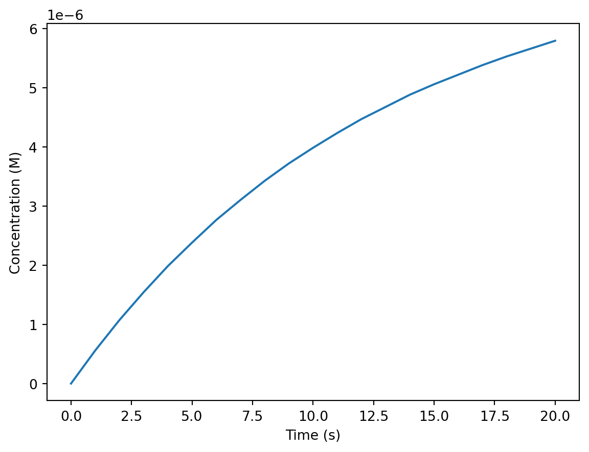
In enzyme kinetics, we usually focus on the initial time points, i.e. before the reaction has progressed far enough to allow products to be accumulated and substrate to be depleted. In this early stage of the reaction, we know that the concentration has not changed significantly yet and thus the [S] = S0. Therefore, the reaction time course tends to be linear in this range.
In the following, we want to just fit the initial part of the curve. We do this by defining a new data array containing only the first values.
We want to use Python to determine \(V_0\) for each concentration of \(S\), in order to create a table of \(V_0\) vs \([S]\). To do so we will fit linear functions to the initial parts of the curves, as the slope of these is then \(V_0\).
Start by defining a linear function;
def linear_func(x, a, b):
return a * x + bAs mentioned we want to to get the slope in the initial part of the reaction, where the curves are approximately linear. To do so we need to fit not on all the data-points but only some of them.
We will first do this for the C_S32-column.
## Determine the x and y data
x_data_full = df['time_(s)']
y_data_full = df['C_S32']
## Your task: Set n_points to choose the number of points to fit with
n_points = 5
x_data = x_data_full[0:n_points] # This picks the first n_points points.
y_data = y_data_full[0:n_points] # This picks the first n_points points.
## Your task: Make the fit.
fitted_parameters, trash = curve_fit(linear_func, x_data, y_data)
a, b = fitted_parametersThe cell below plots your fit alongside the data
fig, ax = plt.subplots()
t_smooth = np.linspace(0, 20)
y_fit = linear_func(t_smooth, a, b)
ax.plot(x_data_full, y_data_full, 'o')
ax.plot(t_smooth, y_fit)
ax.set_xlabel('Time (s)')
ax.set_ylabel('Concentration')Text(0, 0.5, 'Concentration')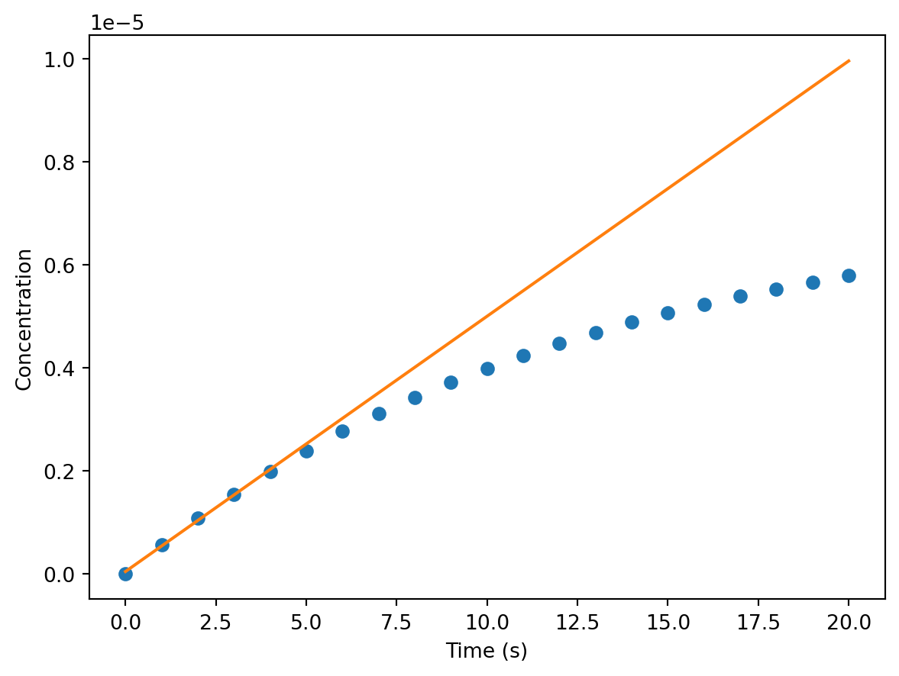
You want the line to fit well with the initial approximately linear part of the data, adjust n_points such that this is the case.
In the cell below n_points again determines the number of data-points used for the linear fit, and makes the fits and plots for every dataset.
from fysisk_biokemi.utils.design_enzyme_kineti_exper import make_fits_and_plots
## Your task: Select a number of points to fit with that is appropriate in
## all cases
n_points = 5
## This function does what you did in the previous exercise but for all the datasets. ##
slopes, concentrations = make_fits_and_plots(df, n_points)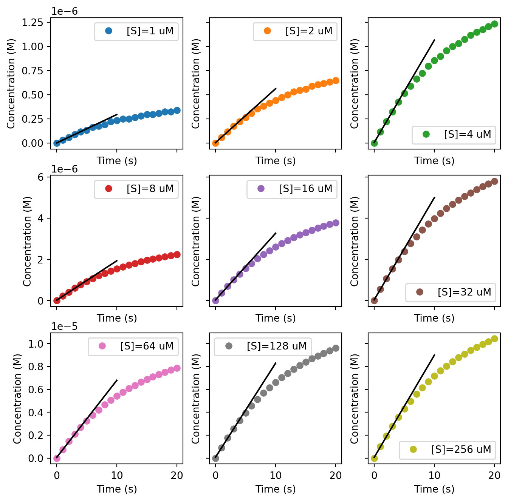
The function ‘make_fits_and_plots’ is beyond what is expected for this course, however if you are interested you can see the source code for it on github.
Once you’re satisfied with the fit you can display the collected slopes with the cell below
V0_df = pd.DataFrame({'[S]_(M)': concentrations, 'V0_(M/s)': slopes})
display(V0_df)| [S]_(M) | V0_(M/s) | |
|---|---|---|
| 0 | 0.000001 | 2.941176e-08 |
| 1 | 0.000002 | 5.588235e-08 |
| 2 | 0.000004 | 1.058824e-07 |
| ... | ... | ... |
| 6 | 0.000064 | 6.735294e-07 |
| 7 | 0.000128 | 8.220588e-07 |
| 8 | 0.000256 | 8.926471e-07 |
9 rows × 2 columns
Why is it important to use \(V_0\) rather than \(V\) at a later time point when creating the Michaelis-Menten plot?
The initial velocities, \(V_0\), represent velocities in which the consumption/formation is only dependent on substrate concentration as no product is yet formed.
Plot \(V_0\) against substrate concentration and estimate \(k_{cat}\) and \(K_M\) visually (remember units)
fig, ax = plt.subplots()
# Your task: Plot the V0_(M/s) versus [S_(M)]
ax.plot(V0_df['[S]_(M)'], V0_df['V0_(M/s)'], 'o')
## EXTRA: Axis labels.
ax.set_xlabel('[S] (M)')
ax.set_ylabel('$V_0$ (M/s)')Text(0, 0.5, '$V_0$ (M/s)')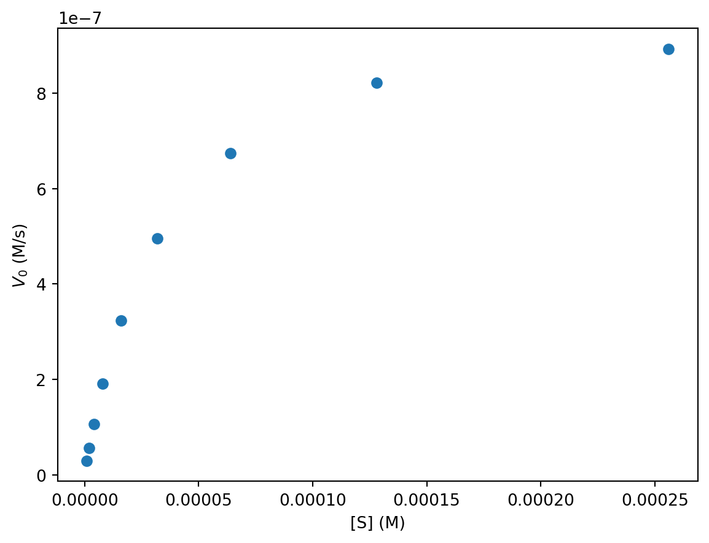
Use the figure to estimate the value of \(K_M\) and \(V_\text{max}\) and put those in the cell below.
# Your task: Put your estimated values here:
K_M_estimate = 30 * 10**(-6)
V_max_estimate = 10 * 10**(-7)Now we can fit with the Michealis-Menten equation, as always in a fitting task we need to implement the model.
def michaelis_menten(S, K_M, V_max):
## Your task: Implement the Michaelis-Menten model.
result = (V_max * S) / (K_M + S)
return resultThen use the next two cells to make the fit and plot it.
## Uses your estimate as initial guess
initial_guess = [K_M_estimate, V_max_estimate]
fitted_parameters, trash = curve_fit(michaelis_menten, V0_df['[S]_(M)'], V0_df['V0_(M/s)'], initial_guess)
## Extract and prints the parameters
K_M_fit, V_max_fit = fitted_parameters
print(K_M_fit)
print(V_max_fit)3.402856184164823e-05
1.0245295933534427e-06How do these compare to your estimates of the two parameters?
fig, ax = plt.subplots()
## Evaluates the fit
S_smooth = np.linspace(0, 0.0003, 100)
V0_fit = michaelis_menten(S_smooth, K_M_fit, V_max_fit)
## Plots the fit and the data.
ax.plot(S_smooth, V0_fit)
ax.plot(V0_df['[S]_(M)'], V0_df['V0_(M/s)'], 'o')
## Axis labels.
ax.set_xlabel('[S] (M)')
ax.set_ylabel('$V_0$ (M/s)');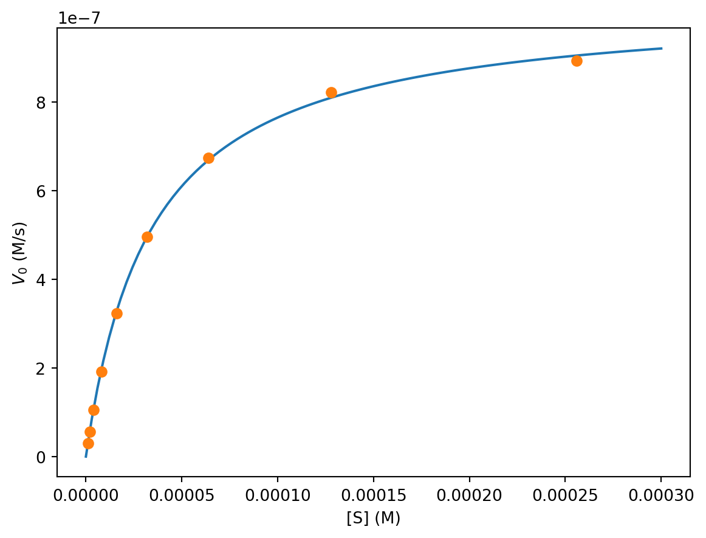
import numpy as np
import pandas as pd
import matplotlib.pyplot as plt
from scipy.optimize import curve_fit
from IPython.display import displayIn the “Introduction to the Molecules of Life” course, you performed an experiment where you measured absorption for different substrate concentrations as a function of time. The experiment was done with p-nitrophenylphosphate as the substrate, which turns into p-nitrophenol when the enzyme (alkaline phosphatase) acts on it.
If you do not have data, or you find that your data set is not of sufficient quality, you can use the following kinetics_data.xlsx.
Load your dataset with pandas. Set data_file_path to the path of your dataset file.
data_file_path = ... # Write the path to the dataset file
df = pd.read_excel(data_file_path)
display(df)from fysisk_biokemi.datasets import load_dataset
df = load_dataset('kinetics_LØ') # Load from package for the solution so it doesn't require to interact.
display(df)| time | 0.8 | 0.4 | 0.2 | 0.12 | 0.05 | 0.02 | 0.01 | 0.003 | |
|---|---|---|---|---|---|---|---|---|---|
| 0 | 0 | 0.032 | 0.101 | 0.018 | 0.032 | 0.015 | 0.013 | 0.008 | -0.001 |
| 1 | 10 | 0.049 | 0.115 | 0.033 | 0.047 | 0.027 | 0.023 | 0.016 | 0.003 |
| 2 | 20 | 0.065 | 0.130 | 0.047 | 0.060 | 0.039 | 0.033 | 0.023 | 0.007 |
| ... | ... | ... | ... | ... | ... | ... | ... | ... | ... |
| 16 | 160 | 0.269 | NaN | NaN | NaN | NaN | NaN | NaN | NaN |
| 17 | 170 | 0.283 | NaN | NaN | NaN | NaN | NaN | NaN | NaN |
| 18 | 180 | 0.298 | NaN | NaN | NaN | NaN | NaN | NaN | NaN |
19 rows × 9 columns
The measured absorbances are unitless, they are the log of the ratio between the incoming light intensity and the transmitted light intensity. We would like to work with concentrations instead, so we need to convert the absorbance to concentration. The conversion is done using Lambert-Beer’s law.
The extinction coefficient of the product p-nitrophenol is \(\varepsilon = 18000 \, \text{M}^{-1} \text{cm}^{-1}\) at \(405 \ \text{nm}\) and the path length of the cuvette is \(l = 1\, \text{cm}\). We will construct a new DataFrame with concentrations
We will start by defining a function lambert_beers to calculate the concentrations
def lambert_beers(absorbance):
## Your task: Finish the implementation of LBs-law to calculate concentrations.
L = 1 # cm
ext_coeff = 18000 # 1 / (M cm)
conc = absorbance / (L * ext_coeff) # M
return concThe next cell makes a new DataFrame by applying the lambert_beers function to every column in the original
data = {
'time': df['time'],
'S_0.8_mM': lambert_beers(df['0.8']),
'S_0.4_mM': lambert_beers(df['0.4']),
'S_0.2_mM': lambert_beers(df['0.2']),
'S_0.12_mM': lambert_beers(df['0.12']),
'S_0.05_mM': lambert_beers(df['0.05']),
'S_0.02_mM': lambert_beers(df['0.02']),
'S_0.01_mM': lambert_beers(df['0.01']),
'S_0.003_mM': lambert_beers(df['0.003']),
}
df = pd.DataFrame(data)
display(df)| time | S_0.8_mM | S_0.4_mM | S_0.2_mM | S_0.12_mM | S_0.05_mM | S_0.02_mM | S_0.01_mM | S_0.003_mM | |
|---|---|---|---|---|---|---|---|---|---|
| 0 | 0 | 0.000002 | 0.000006 | 0.000001 | 0.000002 | 8.333333e-07 | 7.222222e-07 | 4.444444e-07 | -5.555556e-08 |
| 1 | 10 | 0.000003 | 0.000006 | 0.000002 | 0.000003 | 1.500000e-06 | 1.277778e-06 | 8.888889e-07 | 1.666667e-07 |
| 2 | 20 | 0.000004 | 0.000007 | 0.000003 | 0.000003 | 2.166667e-06 | 1.833333e-06 | 1.277778e-06 | 3.888889e-07 |
| ... | ... | ... | ... | ... | ... | ... | ... | ... | ... |
| 16 | 160 | 0.000015 | NaN | NaN | NaN | NaN | NaN | NaN | NaN |
| 17 | 170 | 0.000016 | NaN | NaN | NaN | NaN | NaN | NaN | NaN |
| 18 | 180 | 0.000017 | NaN | NaN | NaN | NaN | NaN | NaN | NaN |
19 rows × 9 columns
Now let’s plot the data. Plot each column separately as a function of time.
fig, ax = plt.subplots()
# Your task: Plot concentration vs. time for each column of the dataset,
# So 8 lines of code total.
ax.plot(df['time'], df['S_0.8_mM'], '-o', label='S_0.8_mM')
ax.plot(df['time'], df['S_0.4_mM'], '-o', label='S_0.4_mM')
ax.plot(df['time'], df['S_0.2_mM'], '-o', label='S_0.2_mM')
ax.plot(df['time'], df['S_0.12_mM'], '-o', label='S_0.12_mM')
ax.plot(df['time'], df['S_0.05_mM'], '-o', label='S_0.05_mM')
ax.plot(df['time'], df['S_0.02_mM'], '-o', label='S_0.02_mM')
ax.plot(df['time'], df['S_0.01_mM'], '-o', label='S_0.01_mM')
ax.plot(df['time'], df['S_0.003_mM'], '-o', label='S_0.003_mM')
ax.set_xlabel('Time [s]')
ax.set_ylabel('Concentration [M]')
ax.legend()
plt.show()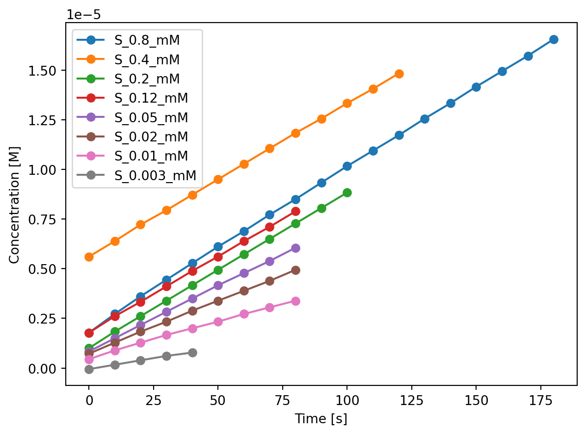
An alternative solution is using a for-loop, this is beyond the scope of the course and you will not get exam questions regarding this.
However it is more flexible than writing code for every column - the same code
could be used datasets with hundreds or thousands of columns.
fig, ax = plt.subplots()
for column_name in df.keys(): # This loops over each column name of the dataframe.
if column_name != 'time': # Means "if column_name is not equal to 'time'".
# This only happens when the above condition is met.
ax.plot(df['time'], df[column_name], '-o', label=column_name)
ax.set_xlabel('Time [s]')
ax.set_ylabel('Concentration [M]')
ax.legend()
plt.show()In order to apply the Michaelis Menten equation we need the slopes of these curves as that is the reaction velocity \(V_0\), luckily we have learned how to make fits! So we make a fit to the linear function to determine the slope \(a\) in, \[ y(x) = a x + b \] As always, start by writing the function
def linear_function(x, a, b):
## Your task: Implement the linear function
result = ...
return resultdef linear_function(x, a, b):
## Your task: Implement the linear function
result = a * x + b
return resultNow we want to find the slope for each column, to help with that we will introduce a function that takes the time column and one of the concentration columns and returns the slope
def find_slope(time_data, abs_data):
## This selects the times and absorbances that have been measured (not NaN)
## Don't worry about this - this is just to help you with this exercise.
indices = np.where(~abs_data.isna())[0]
time_data = time_data[indices]
abs_data = abs_data[indices]
## Find the slope and the intercept using curve_fit and return the slope
fitted_parameters, trash = curve_fit(linear_function, time_data, abs_data)
slope = fitted_parameters[0]
return slopeNow we want to use this for each set of measurements at different substrate concentrations.
## Your task: Find the slopes for every substrate concentration.
slope_08 = find_slope(df['time'], df['S_0.8_mM'])
slope_04 = find_slope(df['time'], df['S_0.4_mM'])
slope_02 = find_slope(df['time'], df['S_0.2_mM'])
slope_012 = find_slope(df['time'], df['S_0.12_mM'])
slope_005 = find_slope(df['time'], df['S_0.05_mM'])
slope_002 = find_slope(df['time'], df['S_0.02_mM'])
slope_001 = find_slope(df['time'], df['S_0.01_mM'])
slope_0003 = find_slope(df['time'], df['S_0.003_mM'])
## This gathers the slopes and makes an array with the substrate concentrations.
substrate_concentrations = np.array([0.8, 0.4, 0.2, 0.12, 0.05, 0.02, 0.01, 0.003]) * 10**(-3)
slopes = np.array([slope_08, slope_04, slope_02, slope_012, slope_005, slope_002, slope_001, slope_0003])Now make a plot of the slopes versus the substrate concentrations using the two arrays substrate_concentrations and slopes.
fig, ax = plt.subplots()
## Your task plot the slopes vs. substrate concentration.
ax.plot(substrate_concentrations, slopes, 'o')
## Sets x and y axis labels.
ax.set_xlabel('Substrate concentration')
ax.set_ylabel('Slope')
plt.show()
## Your task: Estimate K_M and V_max from the plot.
K_M_estimate = 0.00001
V_max_estimate = 8 * 10**(-8)Now that we have the slopes we can fit to the Michaelis Menten equation, again we need to implement the equation
def michaelis_menten(S, K_M, V_max):
## Your task: Implement the Michaelis-Menten model.
result = (V_max * S) / (K_M + S)
return resultThen fit to the slopes we extracted to the Michealis-Menten equation
## This is your estimates as the initial guess.
initial_guess = [K_M_estimate, V_max_estimate]
## Your task: Make a fit to the Michaelis-Menten equation & extract K_M and V_max.
fitted_parameters, trash = curve_fit(michaelis_menten, substrate_concentrations, slopes, initial_guess)
K_M_fit, V_max_fit = fitted_parameters
print(K_M_fit)
print(V_max_fit)1.1035718037533613e-05
8.121800807252114e-08S_smooth = np.linspace(substrate_concentrations.min(), substrate_concentrations.max())
V0_fit = michaelis_menten(S_smooth, K_M_fit, V_max_fit)fig, ax = plt.subplots()
## Your task: Plot the data and the fit
ax.plot(substrate_concentrations, slopes, 'o', label='Data')
ax.plot(S_smooth, V0_fit, label='Fit')
## These add x and y axis labels.
ax.set_xlabel('Substrate concentration (M)')
ax.set_ylabel('$V_0$ (M/s)')
plt.show()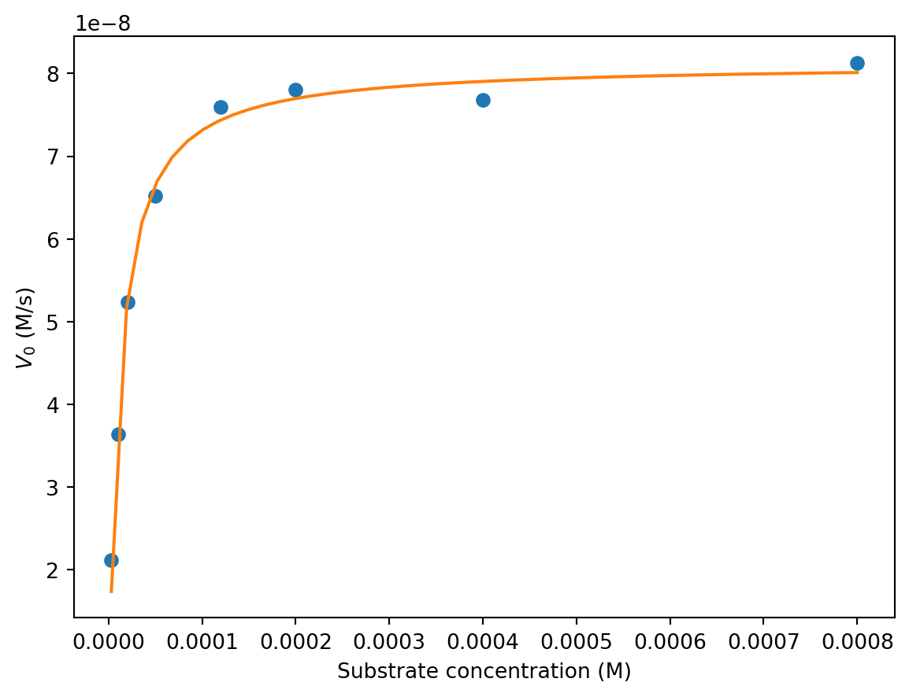
Given that the enzyme concentration was \(3.33 \frac{\text{mg}}{\text{L}}\) and the molecular weight of the enzyme (alkaline phosphatase) is 86000 \(\frac{\text{g}}{\text{mol}}\), calculate the turnover number \(k_{cat}\).
Start by converting the enzyme concentration to molar units and then calculate the turnover number.
## Your task: Calculate the enzyme concentration and use that and your fit to
## calculate kcat.
enzyme_conc = (3.33*10**(-3)) / 86000
kcat = V_max_fit / enzyme_conc
print(kcat)2.097522130401447